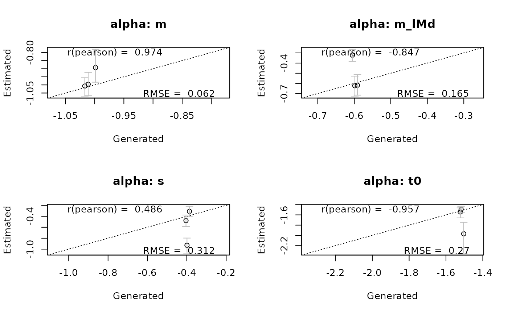
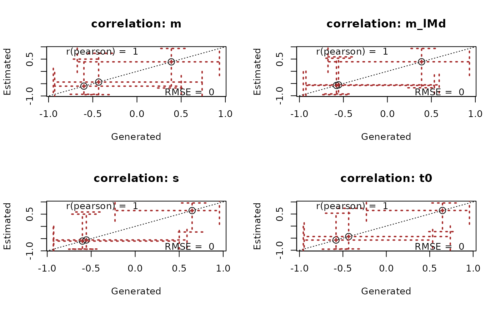

Plots recovery of data generating parameters/samples.
Full range of samples manipulations described in get_pars
Usage
# S3 method for class 'emc'
recovery(
emc,
true_pars,
selection = "mu",
layout = NA,
do_CI = TRUE,
correlation = "pearson",
stat = "rmse",
digits = 3,
CI = 0.95,
ci_plot_args = list(),
...
)
recovery(emc, ...)Arguments
- emc
An emc object
- true_pars
A vector of data-generating parameters or an emc object with data-generating samples
- selection
A Character vector. Indicates which parameter types to plot (e.g.,
alpha,mu,sigma2,correlation).- layout
A vector indicating which layout to use as in par(mfrow = layout). If NA, will automatically generate an appropriate layout.
- do_CI
Boolean. If
TRUEwill also include bars representing the credible intervals- correlation
Character. Which correlation to include in the plot. Options are either
pearsonorspearman- stat
Character. Which statistic to include in the plot. Options are either
rmseorcoverage- digits
Integer. How many digits to round the statistic and correlation in the plot to
- CI
Numeric. The size of the credible intervals. Default is .95 (95%).
- ci_plot_args
A list. Optional additional arguments to be passed to plot.default for the plotting of the credible intervals (see
par())- ...
Optional arguments that can be passed to
get_parsorplot.default(seepar())
Examples
# Make up some values that resemble posterior samples
# Normally this would be true values that were used to simulate the data
# Make up some values that resemble posterior samples
# Normally this would be true values that were used to simulate the data
pmat <- matrix(rnorm(12, mean = c(-1, -.6, -.4, -1.5), sd = .01), ncol = 4, byrow = TRUE)
# Conventionally this would be created before one makes data with true values
recovery(samples_LNR, pmat, correlation = "pearson", stat = "rmse", selection = "alpha")

# Similarly we can plot recovery of other parameters with a set of true samples
true_samples <- samples_LNR # Normally this would be data-generating samples
recovery(samples_LNR, true_samples, correlation = "pearson", stat = "rmse",
selection = "correlation", cex = 1.5,
ci_plot_args = list(lty = 3, length = .2, lwd = 2, col = "brown"))
